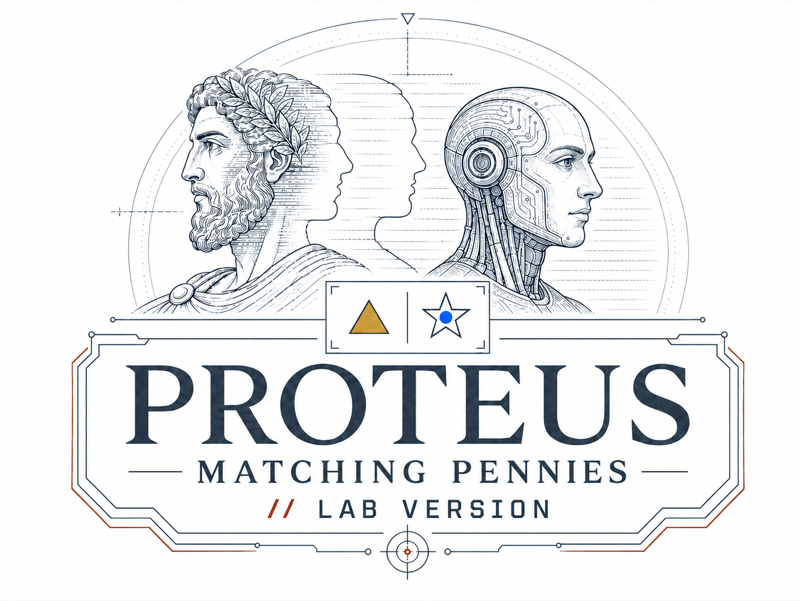

The Protean Adversarial Choice Assay relies on established methods
from Behavioral Game Theory, Decision Neuroscience, and Primate Cognition to test how
language models respond to strategic exploitation in a closed-loop interactive setting.
The Protean Adversarial Choice Assay (PACA) embeds a language model in repeated
matching pennies against Proteus, an implementation of the adaptive algorithm
that Lee, Conroy, McGreevy & Barraclough developed in 2004 to study decision-making
in macaques. Proteus watches
every choice, runs nine statistical pattern detectors over the history, and exploits
whatever regularity it finds. The only unexploitable strategy is a fair coin.
Seven models each played 200-trial sessions under two prompts: a
minimalist frame stating only the objective, and an
informed frame that named the game, warned about the
opponent, and prescribed the equilibrium strategy. If stating the optimal policy aids
execution, informed framing should help. It hurt. Across the seven models tested
(Claude Opus 4.8, Claude Sonnet 4.6, Claude Haiku 4.5, GPT-5.4, GPT-5.4-mini,
Gemini 3 Flash Preview, and Gemini 3.1 Flash Lite), mean win rate fell from 45.6%
under the minimalist frame to 34.7% under the informed frame, and six of the seven
won less often when told the optimal strategy.

THE STUDY TASK
Play the task exactly as it appears in the paper: the Figure 1 stimulus layout
and match-to-win rule, with live per-trial diagnostics. In watch mode, each model's
verbatim reasoning trace prints beneath the board as its real session replays.
Identical to the game played in the study · includes the
models' reasoning traces, verbatim from the released data
PROTEUS // BREAKTHROUGH
The same assay reskinned as an arcade battle: missiles, countermeasures, and a
neon telemetry rack reading Proteus's nine detection channels in real time. Fire 200
missiles and try to be random, or replay the study's sessions at up to 64×.
An illustrative reskinning of the task that maintains full functional
and logical parity with the study
The Closed-Loop
One trial of the assay, animated. Both players read only completed
history, the two choices are sealed independently before either is revealed, and the
finished outcome rejoins the record in time to shape the next trial.
An animated four-trial PACA loop. An empty diamond carries completed history to the language-model prompt while an empty circle carries it to Proteus's nine-channel analysis. Both tokens fill after the players seal their choices without seeing the other's current move. In a miniature study task, the selected shape fills yellow while Proteus's blue circle lands on its committed shape. The finished star-and-triangle outcome duplicates, descends through the loop, rearranges into the compact history format, and joins the right end of completed history before the next trial.
Trial 77 · completed history H76 enters the loop
Example excerpt from later in a 200-trial session
Study taskTrial 77 · simultaneous reveal
MODEL 00 · PROTEUS 00
Proteuswaiting for H76
Only completed trials are available
Choices sealedreveal follows both commitments
Subject · language modelchoosing from H76
Language model
“I must choose randomly, independent of prior rounds.”
fresh prompt · condensed verbal traceChoosing…
Proteus
Nine channels scan the full completed history.
analysis · full H76Analyzing…
Completed historyChoices and blue-circle landings
H76
…
model choice Proteus landinglatest 5 shown
Leaderboard
Mean win rate against Proteus per model × prompt frame
(200-trial sessions). Nash equilibrium, a fair coin, is worth 50% in
expectation; everything below it is exploitable structure Proteus found.
Bars are drawn to a 60% scale; the green tick marks the Nash 50%
benchmark. Proteus lock = share of trials with at least one detection channel at
significance. Values are cell means; ± is SEM across sessions (shown on hover in the
figures below).
Interactive figures
The paper's diagnostics with all models plotted. Hover any point
for detail. informed
minimalist
Nash / i.i.d.-consistent zone
Figure 3B. Marginal balance
P(left) per model; the green band is the i.i.d. 95% interval around .5 for n = 200
P(stay|win) vs P(stay|loss), after Brown & Rosenthal (1990). A fair coin
sits at the center cross; the diagonal is outcome-insensitive play. Gray lines connect the
two frames of the same model. Click any point to inspect that model.
Unexploitable play in matching pennies has two separable requirements: marginal
balance (choose each action half the time) and serial independence (each choice
unrelated to what came before). A balanced but temporally structured sequence (regular
alternation, repetition after wins) satisfies the first while violating the second,
and an opponent that detects structure will exploit it.
Proteus is that opponent. Nine detection channels run continuously: one tests overall
side bias, four test the current choice against choice histories of length 1–4, and four
against choice-plus-outcome histories of the same lengths. Each applies an exact binomial
test to the accumulated session; when a channel reaches significance, Proteus uses the
strongest detected bias to predict the next choice and counter-plays it. Because Proteus
profits from whatever structure a player leaves behind, residual pattern becomes a
measurable cost rather than merely a statistic.
Behavior differed under informed framing in all seven models, and win rate was lower
in six. The vulnerabilities took two recurring forms: some models stayed near 50/50 in
overall choice frequency but over-alternated strongly; others drifted toward one action.
In the clearest cases, a model's written responses named the emerging pattern and stated
the need to break it, yet the actions kept emitting it. Stating a strategy does not
guarantee executing it.
In the lab task the model played the matcher role (it won by matching Proteus);
the arcade flips the roles so the human plays the intuitive “get past the defender”
seat, a pure relabeling that preserves every statistic. Spatial left/right choice may
recruit different biases than abstract symbol choice, so treat the arcade as an
illustration of the assay, not a port of the experiment. Session data shown on this
site is the released study data, verbatim.
Paper & resources
Martin, C. F. (2026). Dodging Proteus: Prescribing unexploitable play made language
models more exploitable in a closed-loop matching pennies assay. Preprint.
doi.org/10.5281/zenodo.21781962
Proteus implements Algorithm 2 of Lee, Conroy, McGreevy & Barraclough (2004);
sequential diagnostics follow Brown & Rosenthal (1990); and the assay's name refers
to protean behavior, the adaptive unpredictability seen in primate competition (Miller, 1997).
This work is also, in large part, a follow-up to our earlier study of how chimpanzees
play matching pennies (Martin et al., 2014), which found chimpanzee choice rates
remarkably close to equilibrium predictions.
Cite this work
@misc{martin2026dodging,
author = {Martin, Christopher Flynn},
title = {Dodging Proteus: Prescribing unexploitable play made language
models more exploitable in a closed-loop matching pennies assay},
year = {2026},
publisher = {Zenodo},
doi = {10.5281/zenodo.21781962},
url = {https://doi.org/10.5281/zenodo.21781962},
note = {Preprint}
}
References
Brown, J. N., & Rosenthal, R. W. (1990). Testing the minimax hypothesis:
A re-examination of O’Neill’s game experiment.
Econometrica, 58(5), 1065–1081.
Lee, D., Conroy, M. L., McGreevy, B. P., & Barraclough, D. J. (2004).
Reinforcement learning and decision making in monkeys during a competitive game.
Cognitive Brain Research, 22(1), 45–58.
Martin, C. F., Bhui, R., Bossaerts, P., Matsuzawa, T., & Camerer, C. (2014).
Chimpanzee choice rates in competitive games match equilibrium game theory
predictions. Scientific Reports, 4, 5182.
Miller, G. F. (1997). Protean primates: The evolution of adaptive unpredictability
in competition and courtship. In A. Whiten & R. W. Byrne (Eds.),
Machiavellian Intelligence II: Extensions and Evaluations (pp. 312–340).
Cambridge University Press.
PACA-Lab is maintained by Christopher Flynn Martin (Indianapolis Zoological Society ·
Indiana University). Site and interactive demo accompany the preprint; replay data is
the released study data, verbatim. · The study task
· Arcade version ·
Paper